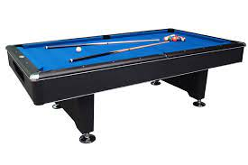

More 7 foot tables?
Do you want to know more? Click the button bellow!
Read more
This is the most common size for billiard tables. It is also the size that is used in most professional tournaments. The benefits of a seven-foot table are that it provides ample space for players to move around and make shots. It also allows for a wide variety of game types to be played. Most people who buy a billiard table for their home choose a seven-foot table. They are an all-around good size and can be used for a variety of game types. If you have the space, we recommend choosing a seven-foot table. These tables are also great for beginner players as usually, they start out using the 7ft tables and then once they get more experience they can move up to the larger tables.
Do you want to know more? Click the button bellow!
Read moreLike the pictures? Visit our gallery for more!


Fun Fact: The term "pool" in "billiards pool" originally referred to a collective bet or ante put into a pot at the start of a game. The term likely originated from horse racing, where such a pool was used to combine bets. Over time, the name stuck and became associated with the game itself.
Fun Fact: Cue chalk, an essential accessory in billiards, was invented by straight rail billiards champion William A. Spinks and chemist William Hoskins in the early 19th century. Chalk is applied to the cue tip to increase friction between the cue and the ball, helping players achieve better control and spin.
Fun Fact: Albert Einstein, the renowned physicist, was known to enjoy a game of billiards. Legend has it that he considered billiards a great way to relax and clear his mind. It is said that he once remarked, "A game of billiards is the best way to cure insomnia; you get so bored that you fall asleep." While the accuracy of this quote may be debated, it adds a playful touch to the connection between the scientific genius and the game of pool.